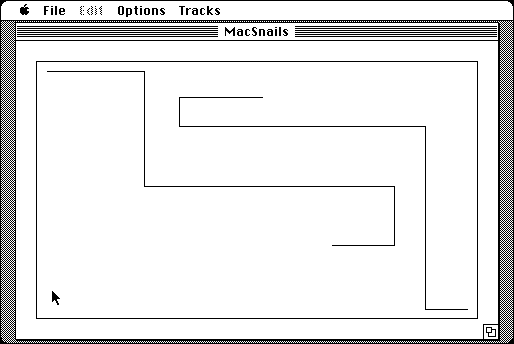

Download
mac_snails_1.0.zip (20K) MacSnails 1.0 repackaged into a zipped hfs disk image and checksum file. The disk image can be mounted with Mini vMac.
mac_snails_1.0.sit (16K) MacSnails 1.0 in the original format.
copyright: Niklas Frykholm
mod date: Aug 17, 1996
license: shareware
official url :
MacSnails
Two player snake game.

If you find these downloads useful, please consider helping the Gryphel Project, which hosts them.
Here are the md5 checksums for the downloads, signed with Gryphel Key 5:
--------- GRY SIGNED TEXT --------- a25924bd3a4da82f891f665866f1cb8e mac_snails_1.0.zip 06433c6de49af4da9dbceff7f2667602 mac_snails_1.0.sit ------- BEGIN GRY SIGNATURE ------- Gry/4Xa8CFcUzxdN/KhEEOE/XoKKQKYWy7BACEkSDAiKcxVB6/wcSe+YkAQSXfRD sGTmS0svZFuoAmWyYXRocWc8UMlHRqgPqNxT4mLD6voAiLVQljlmF5sRByWu4iBF 15OWPeCrCp52TFcW8jAkN9t+nWkkrfwlLkXsf14+bxq+C56XkbZs8KGKigi86OkF -------- END GRY SIGNATURE --------